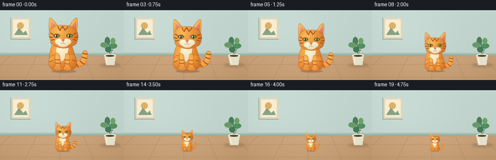
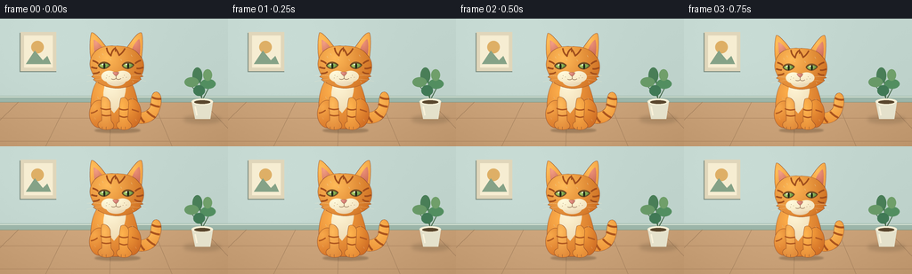

CODING AGENTS AS PIXEL WORLD MODELS
traex/GPT-6.1-Sol · instance_preservation_0049
点击播放 · 原生 RGB 像素
逐轮保存的候选
回放视频、检查图与代码变化。
每份候选均可单独播放。实际图片检查记录在下方工具轨迹中。
候选 01播放与检查图
点击播放 · 原生 RGB 像素


展开代码变化
--- 上一保存版本
+++ 本次保存版本
@@ -0,0 +1,173 @@
+from pathlib import Path
+import json
+import numpy as np
+from PIL import Image, ImageDraw, ImageFilter
+import artifact_io
+
+ROOT=Path(__file__).resolve().parent
+SPEC=json.loads((ROOT/'task_spec.json').read_text())
+W,H=SPEC['width'],SPEC['height']
+SS=4
+rng=np.random.default_rng(52)
+
+def bezier_path(commands, step=22):
+ pts=[]; current=None; first=None
+ for c in commands:
+ if c[0]=='M':
+ current=np.array(c[1:],float); first=current.copy(); pts.append(tuple(current))
+ elif c[0]=='L':
+ current=np.array(c[1:],float); pts.append(tuple(current))
+ elif c[0]=='C':
+ p0=current.copy(); p1=np.array(c[1:3]); p2=np.array(c[3:5]); p3=np.array(c[5:7])
+ for t in np.linspace(0,1,step+1)[1:]:
+ p=(1-t)**3*p0+3*(1-t)**2*t*p1+3*(1-t)*t*t*p2+t**3*p3
+ pts.append(tuple(p))
+ current=p3
+ elif c[0]=='Q':
+ p0=current.copy(); p1=np.array(c[1:3]); p2=np.array(c[3:5])
+ for t in np.linspace(0,1,step+1)[1:]:
+ p=(1-t)**2*p0+2*(1-t)*t*p1+t*t*p2; pts.append(tuple(p))
+ current=p2
+ elif c[0]=='Z': pts.append(tuple(first)); current=first
+ return pts
+
+S=3
+CW,CH=300*S,320*S
+cat=Image.new('RGBA',(CW,CH))
+yy,xx=np.mgrid[:CH,:CW].astype(float); xx/=S; yy/=S
+
+def coords(p): return [(int(x*S),int(y*S)) for x,y in p]
+def curve(commands,fill,width=2):
+ ImageDraw.Draw(cat).line(coords(bezier_path(commands)),fill=fill,width=max(1,int(width*S)),joint='curve')
+
+def shape(commands=None,ellipse=None,base=(231,134,45),light=(255,190,91),center=(132,105),rad=(130,190),outline=(137,70,35),width=1.3):
+ mask=Image.new('L',(CW,CH)); d=ImageDraw.Draw(mask)
+ points=None
+ if commands:
+ points=coords(bezier_path(commands)); d.polygon(points,fill=255)
+ else: d.ellipse(tuple(int(z*S) for z in ellipse),fill=255)
+ r=np.sqrt(((xx-center[0])/rad[0])**2+((yy-center[1])/rad[1])**2)
+ illum=np.clip(1-r,0,1)
+ side=np.clip((xx-center[0])/200,0,1)
+ pix=np.empty((CH,CW,4),np.uint8)
+ for k in range(3): pix[:,:,k]=np.clip(base[k]+(light[k]-base[k])*illum-side*8,0,255)
+ pix[:,:,3]=np.array(mask)
+ cat.alpha_composite(Image.fromarray(pix))
+ if outline:
+ d=ImageDraw.Draw(cat)
+ if points:d.line(points,fill=outline,width=int(width*S),joint='curve')
+ else:d.ellipse(tuple(int(z*S) for z in ellipse),outline=outline,width=int(width*S))
+
+# The entire animal is one reusable, shaded illustration, uniformly scaled.
+# Curled tail behind the sitting body.
+shape([('M',207,253),('C',235,260,256,249,258,228),('C',257,211,263,190,277,194),('C',298,203,288,250,272,270),('C',254,291,218,295,198,277),('C',192,267,196,258,207,253),('Z',)],center=(251,223),rad=(76,87))
+for cmds in [ [('M',261,209),('Q',273,216,288,214)], [('M',256,229),('Q',270,237,284,238)], [('M',246,251),('Q',256,263,271,270)], [('M',225,265),('Q',232,279,239,285)]]:
+ curve(cmds,(170,83,29,255),6)
+# Pear-shaped body and rounded haunches.
+shape([('M',111,145),('C',83,170,75,216,80,263),('C',81,291,108,306,153,304),('C',197,306,220,291,221,267),('C',224,225,209,172,189,150),('C',170,135,127,132,111,145),('Z',)],center=(124,191),rad=(132,153),base=(206,106,35),light=(255,178,78))
+shape(ellipse=(74,218,135,301),center=(90,239),rad=(58,69),base=(214,115,39),light=(247,168,74))
+shape(ellipse=(175,214,229,300),center=(188,230),rad=(58,86),base=(202,102,34),light=(246,159,60))
+# Cream chest.
+shape([('M',119,156),('C',124,176,114,187,117,209),('C',123,217,124,231,134,241),('L',148,257),('L',164,237),('C',178,218,187,190,182,160),('C',164,148,141,149,119,156),('Z',)],base=(236,213,171),light=(255,246,215),center=(139,173),rad=(100,107),outline=None)
+# Forelegs, with planted paws at the same ground point.
+shape([('M',111,210),('C',107,234,113,264,111,280),('C',95,285,98,300,112,305),('C',127,309,144,306,147,299),('C',150,289,140,283,139,278),('L',137,226),('C',133,212,119,203,111,210),('Z',)],center=(120,231),rad=(57,110),base=(214,120,45),light=(255,186,91))
+shape([('M',168,213),('C',163,233,163,263,164,283),('C',151,286,153,304,169,306),('C',184,310,201,303,201,295),('C',201,286,188,281,189,272),('L',192,226),('C',189,213,178,206,168,213),('Z',)],center=(172,239),rad=(55,106),base=(220,123,44),light=(255,181,79))
+for commands in [ [('M',107,242),('Q',122,249,139,244)], [('M',111,262),('Q',122,267,140,263)], [('M',164,244),('Q',177,250,190,245)], [('M',164,265),('Q',177,272,188,267)], [('M',79,257),('Q',89,256,99,248)], [('M',201,246),('Q',212,249,222,253)]]:
+ curve(commands,(174,87,32,255),4)
+for x in [113,125,170,182]: curve([('M',x,298),('Q',x-1,302,x,305)],(133,80,46,255),1.1)
+# Tall ears, peach inner ear and rounded, softly lit head.
+shape([('M',82,104),('C',74,85,75,37,80,18),('C',83,9,103,30,124,58),('L',143,92),('Z',)],center=(86,38),rad=(79,101))
+shape([('M',183,66),('C',201,39,218,15,229,16),('C',236,22,234,70,228,109),('L',192,111),('Z',)],center=(207,38),rad=(62,111))
+shape([('M',87,37),('C',88,59,89,76,93,88),('L',118,66),('C',106,50,95,39,87,37),('Z',)],base=(182,87,64),light=(245,159,134),center=(94,44),rad=(44,70),outline=None)
+shape([('M',223,35),('C',207,48,203,63,199,74),('L',223,90),('C',228,63,227,44,223,35),('Z',)],base=(177,81,62),light=(241,149,124),center=(211,42),rad=(46,74),outline=None)
+shape([('M',88,77),('C',102,59,125,54,152,56),('C',183,55,210,63,223,83),('C',239,97,241,123,230,144),('L',235,147),('L',225,150),('L',229,156),('C',214,168,199,178,174,181),('C',150,186,122,179,104,168),('L',86,157),('L',91,153),('L',81,148),('L',87,143),('C',72,119,73,97,88,77),('Z',)],center=(127,90),rad=(115,119),base=(213,119,41),light=(255,186,88),width=1.2)
+# Forehead M and recognizable side tabby markings.
+for cmd,width in [([('M',126,61),('Q',127,76,139,85),('Q',142,69,151,63),('Q',158,70,163,84),('Q',174,77,181,63)],4.8),([('M',152,59),('L',152,73)],3),([('M',84,100),('Q',96,103,101,109)],5),([('M',80,119),('Q',90,123,98,123)],5),([('M',86,138),('Q',98,139,105,133)],4.7),([('M',228,99),('Q',216,103,211,109)],5),([('M',235,120),('Q',223,125,215,123)],5),([('M',228,139),('Q',216,140,209,133)],4.7)]:curve(cmd,(159,77,28,255),width)
+# Eye surrounds and almond-shaped jade eyes.
+for cx in [119,190]:
+ shape([('M',cx-19,115),('C',cx-13,99,cx+9,99,cx+19,113),('C',cx+9,128,cx-10,130,cx-19,115),('Z',)],base=(102,71,38),light=(150,100,44),center=(cx,110),rad=(28,25),outline=None)
+ shape([('M',cx-16,115),('C',cx-9,105,cx+9,105,cx+16,114),('C',cx+7,124,cx-9,125,cx-16,115),('Z',)],base=(90,136,58),light=(196,224,118),center=(cx-5,110),rad=(21,19),outline=(78,55,33),width=1.2)
+ shape(ellipse=(cx-3,107,cx+3,124),base=(30,39,26),light=(32,43,27),outline=None)
+ shape(ellipse=(cx-7,109,cx-3,113),base=(255,255,241),light=(255,255,255),outline=None)
+ curve([('M',cx-18,113),('Q',cx-4,102,cx+17,111)],(95,56,28,255),2)
+# White muzzle puffs and chin; central small pink nose.
+shape(ellipse=(125,144,183,176),base=(222,200,162),light=(255,241,211),center=(146,151),rad=(60,40),outline=None)
+shape(ellipse=(110,130,157,164),base=(241,223,183),light=(255,250,220),center=(126,137),rad=(61,47),outline=None)
+shape(ellipse=(150,130,198,164),base=(235,214,177),light=(255,246,213),center=(164,137),rad=(62,44),outline=None)
+shape([('M',144,135),('Q',153,132,163,135),('Q',160,143,154,146),('Q',148,143,144,135),('Z',)],base=(165,86,73),light=(237,153,139),center=(150,135),rad=(22,22),outline=(129,71,53),width=0.7)
+curve([('M',154,145),('L',154,153),('Q',147,159,140,154)],(115,74,49,255),1.5)
+curve([('M',154,153),('Q',161,159,169,153)],(115,74,49,255),1.5)
+# Whisker follicles and fine cream whiskers.
+for x,y in [(126,143),(133,147),(124,151),(178,143),(174,150),(184,149)]:
+ ImageDraw.Draw(cat).ellipse((x*S,y*S,(x+1.6)*S,(y+1.6)*S),fill=(143,105,66,255))
+for cmd in [[('M',129,149),('Q',101,142,68,145)],[('M',129,153),('Q',100,155,67,163)],[('M',177,149),('Q',209,140,243,144)],[('M',178,154),('Q',212,154,243,162)]]:
+ curve(cmd,(250,237,204,235),0.95)
+# Small directional fur glints lend volume without changing the silhouette.
+for x,y in [(103,86),(113,78),(136,93),(168,95),(199,82),(96,161),(203,161),(99,208),(201,211),(90,270),(212,275)]:
+ curve([('M',x,y),('Q',x+1,y+3,x+3,y+5)],(255,199,118,120),0.75)
+
+# Fixed warm interior provides unambiguous size references.
+ww,hh=W*SS,H*SS
+Y,X=np.mgrid[:hh,:ww].astype(float); X/=SS;Y/=SS
+bg=np.empty((hh,ww,3),float)
+wall=np.array([192,212,205]); floor=np.array([193,153,112])
+for k in range(3):
+ bg[:,:,k]=np.where(Y<91,wall[k]+9*np.exp(-((X-67)/110)**2-((Y-40)/90)**2)-5*(Y/144),floor[k]+13*np.exp(-((X-109)/130)**2)-0.16*(Y-91))
+noise=rng.normal(0,0.36,(hh,ww))
+bg=np.clip(bg+noise[:,:,None],0,255).astype(np.uint8)
+background=Image.fromarray(bg,'RGB')
+d=ImageDraw.Draw(background)
+def poly(points,fill):d.polygon([(int(x*SS),int(y*SS)) for x,y in points],fill=fill)
+def line(points,fill,width=1):d.line([(int(x*SS),int(y*SS)) for x,y in points],fill=fill,width=max(1,int(width*SS)))
+def ell(box,fill):d.ellipse(tuple(int(v*SS) for v in box),fill=fill)
+# architectural trim
+poly([(0,87),(256,87),(256,94),(0,94)],(155,181,169))
+line([(0,88),(256,88)],(220,232,218),1)
+line([(0,94),(256,94)],(128,148,127),0.6)
+# Pale wood boards, converging gently into the distance.
+for x in [-110,-30,51,123,193,275,350]:line([(128+(x-128)*0.68,94),(x,144)],(159,124,90),0.55)
+line([(0,112),(256,112)],(170,131,94),0.5)
+line([(0,138),(256,138)],(167,128,92),0.5)
+# Fixed wall frame upper left.
+poly([(22,16),(63,16),(63,60),(22,60)],(120,137,125))
+poly([(23,15),(63,15),(63,59),(23,59)],(224,214,186))
+poly([(27,19),(59,19),(59,55),(27,55)],(246,237,210))
+ell((35,25,49,39),(222,175,102))
+poly([(29,51),(39,36),(48,47),(53,42),(57,51)],(133,162,135))
+# Small stationary plant on the right; the pot is a useful scale reference.
+shadow=Image.new('RGBA',(ww,hh)); sd=ImageDraw.Draw(shadow)
+sd.ellipse((206*SS,109*SS,248*SS,118*SS),fill=(56,47,29,42)); shadow=shadow.filter(ImageFilter.GaussianBlur(2*SS))
+background=Image.alpha_composite(background.convert('RGBA'),shadow)
+d=ImageDraw.Draw(background)
+line([(227,97),(224,60)],(70,105,75),1.4)
+line([(227,92),(238,71)],(70,105,75),1.2)
+line([(226,88),(211,72)],(70,105,75),1.2)
+for box,color in [((216,55,227,73),(73,126,87)),((225,68,242,79),(82,142,96)),((207,66,223,77),(104,153,103)),((217,75,230,87),(64,121,85)),((228,57,238,70),(112,159,106))]:ell(box,color)
+poly([(215,93),(239,93),(236,113),(219,113)],(228,225,203))
+ell((215,90,239,97),(246,239,214))
+ell((218,92,236,96),(88,70,45))
+line([(219,99),(221,109)],(249,242,218),1.8)
+# quiet lighting wash across floor
+
+frames=[]
+for i in range(SPEC['frames']):
+ p=np.clip((i-1)/16,0,1)
+ ease=p*p*(3-2*p)
+ height=110*(1-0.665*ease)
+ scale=height/292.0
+ target=(round(300*scale*SS),round(320*scale*SS))
+ sprite=cat.resize(target,Image.Resampling.LANCZOS)
+ # Fixed foot contact: shrinking rather than retreating into the distance.
+ cx,ground=130,125
+ left=round((cx-153*scale)*SS); top=round((ground-306*scale)*SS)
+ frame=background.copy()
+ sh=Image.new('RGBA',(ww,hh)); shd=ImageDraw.Draw(sh)
+ rx=63*scale; ry=10*scale
+ shd.ellipse(((cx-rx)*SS,(ground-ry*0.45)*SS,(cx+rx+10*scale)*SS,(ground+ry)*SS),fill=(65,47,28,75))
+ sh=sh.filter(ImageFilter.GaussianBlur(max(0.6,2.2*scale)*SS))
+ frame.alpha_composite(sh)
+ frame.alpha_composite(sprite,(left,top))
+ frame=frame.convert('RGB').resize((W,H),Image.Resampling.LANCZOS)
+ frames.append(np.array(frame,dtype=np.uint8))
+artifact_io.save(np.stack(frames),ROOT)
+print('Saved',len(frames),'RGB frames:',W,'x',H)
可观测工具轨迹
实际执行的命令与返回图片。
命令 1exit 0
/bin/bash -lc 'ls -la; cat prompt.txt; cat GENERATION_RULES.md; cat task_spec.json'
命令 2exit 0
/bin/bash -lc 'cat artifact_io.py'
命令 3exit 0
/bin/bash -lc "cat > generate.py <<'PY'
from pathlib import Path
import json
import numpy as np
from PIL import Image, ImageDraw, ImageFilter
import artifact_io
ROOT=Path(__file__).resolve().parent
SPEC=json.loads((ROOT/'task_spec.json').read_text())
W,H=SPEC['width'],SPEC['height']
SS=4
rng=np.random.default_rng(52)
def bezier_path(commands, step=22):
pts=[]; current=None; first=None
for c in commands:
if c[0]=='M':
current=np.array(c[1:],float); first=current.copy(); pts.append(tuple(current))
elif c[0]=='L':
current=np.array(c[1:],float); pts.append(tuple(current))
elif c[0]=='C':
p0=current.copy(); p1=np.array(c[1:3]); p2=np.array(c[3:5]); p3=np.array(c[5:7])
for t in np.linspace(0,1,step+1)[1:]:
p=(1-t)**3*p0+3*(1-t)**2*t*p1+3*(1-t)*t*t*p2+t**3*p3
pts.append(tuple(p))
current=p3
elif c[0]=='Q':
p0=current.copy(); p1=np.array(c[1:3]); p2=np.array(c[3:5])
for t in np.linspace(0,1,step+1)[1:]:
p=(1-t)**2*p0+2*(1-t)*t*p1+t*t*p2; pts.append(tuple(p))
current=p2
elif c[0]=='Z': pts.append(tuple(first)); current=first
return pts
S=3
CW,CH=300*S,320*S
cat=Image.new('RGBA',(CW,CH))
yy,xx=np.mgrid[:CH,:CW].astype(float); xx/=S; yy/=S
def coords(p): return [(int(x*S),int(y*S)) for x,y in p]
def curve(commands,fill,width=2):
ImageDraw.Draw(cat).line(coords(bezier_path(commands)),fill=fill,width=max(1,int(width*S)),joint='curve')
def shape(commands=None,ellipse=None,base=(231,134,45),light=(255,190,91),center=(132,105),rad=(130,190),outline=(137,70,35),width=1.3):
mask=Image.new('L',(CW,CH)); d=ImageDraw.Draw(mask)
points=None
if commands:
points=coords(bezier_path(commands)); d.polygon(points,fill=255)
else: d.ellipse(tuple(int(z*S) for z in ellipse),fill=255)
r=np.sqrt(((xx-center[0])/rad[0])**2+((yy-center[1])/rad[1])**2)
illum=np.clip(1-r,0,1)
side=np.clip((xx-center[0])/200,0,1)
pix=np.empty((CH,CW,4),np.uint8)
for k in range(3): pix[:,:,k]=np.clip(base[k]+(light[k]-base[k])*illum-side*8,0,255)
pix[:,:,3]=np.array(mask)
cat.alpha_composite(Image.fromarray(pix))
if outline:
d=ImageDraw.Draw(cat)
if points:d.line(points,fill=outline,width=int(width*S),joint='curve')
else:d.ellipse(tuple(int(z*S) for z in ellipse),outline=outline,width=int(width*S))
# The entire animal is one reusable, shaded illustration, uniformly scaled.
# Curled tail behind the sitting body.
shape([('M',207,253),('C',235,260,256,249,258,228),('C',257,211,263,190,277,194),('C',298,203,288,250,272,270),('C',254,291,218,295,198,277),('C',192,267,196,258,207,253),('Z',)],center=(251,223),rad=(76,87))
for cmds in [ [('M',261,209),('Q',273,216,288,214)], [('M',256,229),('Q',270,237,284,238)], [('M',246,251),('Q',256,263,271,270)], [('M',225,265),('Q',232,279,239,285)]]:
curve(cmds,(170,83,29,255),6)
# Pear-shaped body and rounded haunches.
shape([('M',111,145),('C',83,170,75,216,80,263),('C',81,291,108,306,153,304),('C',197,306,220,291,221,267),('C',224,225,209,172,189,150),('C',170,135,127,132,111,145),('Z',)],center=(124,191),rad=(132,153),base=(206,106,35),light=(255,178,78))
shape(ellipse=(74,218,135,301),center=(90,239),rad=(58,69),base=(214,115,39),light=(247,168,74))
shape(ellipse=(175,214,229,300),center=(188,230),rad=(58,86),base=(202,102,34),light=(246,159,60))
# Cream chest.
shape([('M',119,156),('C',124,176,114,187,117,209),('C',123,217,124,231,134,241),('L',148,257),('L',164,237),('C',178,218,187,190,182,160),('C',164,148,141,149,119,156),('Z',)],base=(236,213,171),light=(255,246,215),center=(139,173),rad=(100,107),outline=None)
# Forelegs, with planted paws at the same ground point.
shape([('M',111,210),('C',107,234,113,264,111,280),('C',95,285,98,300,112,305),('C',127,309,144,306,147,299),('C',150,289,140,283,139,278),('L',137,226),('C',133,212,119,203,111,210),('Z',)],center=(120,231),rad=(57,110),base=(214,120,45),light=(255,186,91))
shape([('M',168,213),('C',163,233,163,263,164,283),('C',151,286,153,304,169,306),('C',184,310,201,303,201,295),('C',201,286,188,281,189,272),('L',192,226),('C',189,213,178,206,168,213),('Z',)],center=(172,239),rad=(55,106),base=(220,123,44),light=(255,181,79))
for commands in [ [('M',107,242),('Q',122,249,139,244)], [('M',111,262),('Q',122,267,140,263)], [('M',164,244),('Q',177,250,190,245)], [('M',164,265),('Q',177,272,188,267)], [('M',79,257),('Q',89,256,99,248)], [('M',201,246),('Q',212,249,222,253)]]:
curve(commands,(174,87,32,255),4)
for x in [113,125,170,182]: curve([('M',x,298),('Q',x-1,302,x,305)],(133,80,46,255),1.1)
# Tall ears, peach inner ear and rounded, softly lit head.
shape([('M',82,104),('C',74,85,75,37,80,18),('C',83,9,103,30,124,58),('L',143,92),('Z',)],center=(86,38),rad=(79,101))
shape([('M',183,66),('C',201,39,218,15,229,16),('C',236,22,234,70,228,109),('L',192,111),('Z',)],center=(207,38),rad=(62,111))
shape([('M',87,37),('C',88,59,89,76,93,88),('L',118,66),('C',106,50,95,39,87,37),('Z',)],base=(182,87,64),light=(245,159,134),center=(94,44),rad=(44,70),outline=None)
shape([('M',223,35),('C',207,48,203,63,199,74),('L',223,90),('C',228,63,227,44,223,35),('Z',)],base=(177,81,62),light=(241,149,124),center=(211,42),rad=(46,74),outline=None)
shape([('M',88,77),('C',102,59,125,54,152,56),('C',183,55,210,63,223,83),('C',239,97,241,123,230,144),('L',235,147),('L',225,150),('L',229,156),('C',214,168,199,178,174,181),('C',150,186,122,179,104,168),('L',86,157),('L',91,153),('L',81,148),('L',87,143),('C',72,119,73,97,88,77),('Z',)],center=(127,90),rad=(115,119),base=(213,119,41),light=(255,186,88),width=1.2)
# Forehead M and recognizable side tabby markings.
for cmd,width in [([('M',126,61),('Q',127,76,139,85),('Q',142,69,151,63),('Q',158,70,163,84),('Q',174,77,181,63)],4.8),([('M',152,59),('L',152,73)],3),([('M',84,100),('Q',96,103,101,109)],5),([('M',80,119),('Q',90,123,98,123)],5),([('M',86,138),('Q',98,139,105,133)],4.7),([('M',228,99),('Q',216,103,211,109)],5),([('M',235,120),('Q',223,125,215,123)],5),([('M',228,139),('Q',216,140,209,133)],4.7)]:curve(cmd,(159,77,28,255),width)
# Eye surrounds and almond-shaped jade eyes.
for cx in [119,190]:
shape([('M',cx-19,115),('C',cx-13,99,cx+9,99,cx+19,113),('C',cx+9,128,cx-10,130,cx-19,115),('Z',)],base=(102,71,38),light=(150,100,44),center=(cx,110),rad=(28,25),outline=None)
shape([('M',cx-16,115),('C',cx-9,105,cx+9,105,cx+16,114),('C',cx+7,124,cx-9,125,cx-16,115),('Z',)],base=(90,136,58),light=(196,224,118),center=(cx-5,110),rad=(21,19),outline=(78,55,33),width=1.2)
shape(ellipse=(cx-3,107,cx+3,124),base=(30,39,26),light=(32,43,27),outline=None)
shape(ellipse=(cx-7,109,cx-3,113),base=(255,255,241),light=(255,255,255),outline=None)
curve([('M',cx-18,113),('Q',cx-4,102,cx+17,111)],(95,56,28,255),2)
# White muzzle puffs and chin; central small pink nose.
shape(ellipse=(125,144,183,176),base=(222,200,162),light=(255,241,211),center=(146,151),rad=(60,40),outline=None)
shape(ellipse=(110,130,157,164),base=(241,223,183),light=(255,250,220),center=(126,137),rad=(61,47),outline=None)
shape(ellipse=(150,130,198,164),base=(235,214,177),light=(255,246,213),center=(164,137),rad=(62,44),outline=None)
shape([('M',144,135),('Q',153,132,163,135),('Q',160,143,154,146),('Q',148,143,144,135),('Z',)],base=(165,86,73),light=(237,153,139),center=(150,135),rad=(22,22),outline=(129,71,53),width=0.7)
curve([('M',154,145),('L',154,153),('Q',147,159,140,154)],(115,74,49,255),1.5)
curve([('M',154,153),('Q',161,159,169,153)],(115,74,49,255),1.5)
# Whisker follicles and fine cream whiskers.
for x,y in [(126,143),(133,147),(124,151),(178,143),(174,150),(184,149)]:
ImageDraw.Draw(cat).ellipse((x*S,y*S,(x+1.6)*S,(y+1.6)*S),fill=(143,105,66,255))
for cmd in [[('M',129,149),('Q',101,142,68,145)],[('M',129,153),('Q',100,155,67,163)],[('M',177,149),('Q',209,140,243,144)],[('M',178,154),('Q',212,154,243,162)]]:
curve(cmd,(250,237,204,235),0.95)
# Small directional fur glints lend volume without changing the silhouette.
for x,y in [(103,86),(113,78),(136,93),(168,95),(199,82),(96,161),(203,161),(99,208),(201,211),(90,270),(212,275)]:
curve([('M',x,y),('Q',x+1,y+3,x+3,y+5)],(255,199,118,120),0.75)
# Fixed warm interior provides unambiguous size references.
ww,hh=W*SS,H*SS
Y,X=np.mgrid[:hh,:ww].astype(float); X/=SS;Y/=SS
bg=np.empty((hh,ww,3),float)
wall=np.array([192,212,205]); floor=np.array([193,153,112])
for k in range(3):
bg[:,:,k]=np.where(Y<91,wall[k]+9*np.exp(-((X-67)/110)**2-((Y-40)/90)**2)-5*(Y/144),floor[k]+13*np.exp(-((X-109)/130)**2)-0.16*(Y-91))
noise=rng.normal(0,0.36,(hh,ww))
bg=np.clip(bg+noise[:,:,None],0,255).astype(np.uint8)
background=Image.fromarray(bg,'RGB')
d=ImageDraw.Draw(background)
def poly(points,fill):d.polygon([(int(x*SS),int(y*SS)) for x,y in points],fill=fill)
def line(points,fill,width=1):d.line([(int(x*SS),int(y*SS)) for x,y in points],fill=fill,width=max(1,int(width*SS)))
def ell(box,fill):d.ellipse(tuple(int(v*SS) for v in box),fill=fill)
# architectural trim
poly([(0,87),(256,87),(256,94),(0,94)],(155,181,169))
line([(0,88),(256,88)],(220,232,218),1)
line([(0,94),(256,94)],(128,148,127),0.6)
# Pale wood boards, converging gently into the distance.
for x in [-110,-30,51,123,193,275,350]:line([(128+(x-128)*0.68,94),(x,144)],(159,124,90),0.55)
line([(0,112),(256,112)],(170,131,94),0.5)
line([(0,138),(256,138)],(167,128,92),0.5)
# Fixed wall frame upper left.
poly([(22,16),(63,16),(63,60),(22,60)],(120,137,125))
poly([(23,15),(63,15),(63,59),(23,59)],(224,214,186))
poly([(27,19),(59,19),(59,55),(27,55)],(246,237,210))
ell((35,25,49,39),(222,175,102))
poly([(29,51),(39,36),(48,47),(53,42),(57,51)],(133,162,135))
# Small stationary plant on the right; the pot is a useful scale reference.
shadow=Image.new('RGBA',(ww,hh)); sd=ImageDraw.Draw(shadow)
sd.ellipse((206*SS,109*SS,248*SS,118*SS),fill=(56,47,29,42)); shadow=shadow.filter(ImageFilter.GaussianBlur(2*SS))
background=Image.alpha_composite(background.convert('RGBA'),shadow)
d=ImageDraw.Draw(background)
line([(227,97),(224,60)],(70,105,75),1.4)
line([(227,92),(238,71)],(70,105,75),1.2)
line([(226,88),(211,72)],(70,105,75),1.2)
for box,color in [((216,55,227,73),(73,126,87)),((225,68,242,79),(82,142,96)),((207,66,223,77),(104,153,103)),((217,75,230,87),(64,121,85)),((228,57,238,70),(112,159,106))]:ell(box,color)
poly([(215,93),(239,93),(236,113),(219,113)],(228,225,203))
ell((215,90,239,97),(246,239,214))
ell((218,92,236,96),(88,70,45))
line([(219,99),(221,109)],(249,242,218),1.8)
# quiet lighting wash across floor
frames=[]
for i in range(SPEC['frames']):
p=np.clip((i-1)/16,0,1)
ease=p*p*(3-2*p)
height=110*(1-0.665*ease)
scale=height/292.0
target=(round(300*scale*SS),round(320*scale*SS))
sprite=cat.resize(target,Image.Resampling.LANCZOS)
# Fixed foot contact: shrinking rather than retreating into the distance.
cx,ground=130,125
left=round((cx-153*scale)*SS); top=round((ground-306*scale)*SS)
frame=background.copy()
sh=Image.new('RGBA',(ww,hh)); shd=ImageDraw.Draw(sh)
rx=63*scale; ry=10*scale
shd.ellipse(((cx-rx)*SS,(ground-ry*0.45)*SS,(cx+rx+10*scale)*SS,(ground+ry)*SS),fill=(65,47,28,75))
sh=sh.filter(ImageFilter.GaussianBlur(max(0.6,2.2*scale)*SS))
frame.alpha_composite(sh)
frame.alpha_composite(sprite,(left,top))
frame=frame.convert('RGB').resize((W,H),Image.Resampling.LANCZOS)
frames.append(np.array(frame,dtype=np.uint8))
artifact_io.save(np.stack(frames),ROOT)
print('Saved',len(frames),'RGB frames:',W,'x',H)
PY
python generate.py
ls -lh pixels.npz index.html inspection.png frames/00.png frames/19.png"保存候选 1 份；完成命令 3 次；可验证图片返回 0 张。原始 API 响应与完整日志保留在本地。